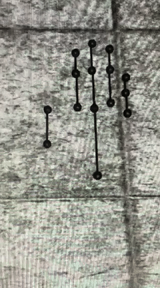
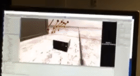
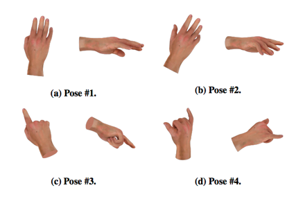
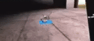

Variables of interest
-
As realistic as possible (currently using stick hands, real hand texture is in progress)

- Size/proportion
Generic proportions and hand size Generic proptions and acurate hand size 
Didn't film it - Degrees of freedom
All DOF restricted except translation of hand All DOF restricted but wrist Flexion of distal phalanges restricted Flexion of distal and intermediate phalanges restricted Finger abduction restricted Finger abduction and flexion of distal phalanges restricted Finger abduction, distal and intermediate phalanges flexion restricted Middle, ring, and pinky move with index  
In progress, Vicon needs to send new hand models 

In progress, Vicon needs to send new hand models 

- Tracking origin
Shifted forward Shifted backward Shifted up Shifted down Shifted left Shifted right 
Didn't film it Didn't film it Didn't film it Didn't film it Didn't film it - Displacement
True postion * 2 (left: no distortion added, right: distortion added) 

- Render style
Stick Ball High realism skin texture High realism single shade Forgot to film In progress, Vicon needs to send new hand models In progress, Vicon needs to send new hand models - Rigidity
Rigid (hand cannot go through objects)/non-rigid (hand just passes through objects) 
Tasks
Hand pose matching

- Addresses: Q2 and Q3 (sense of agency)
- Trials: 22 distortions x 4 poses (from THING paper, see below)
Targeting

- Addresses: Q2 and Q3 (sense of ownership)
- 22 distortions x 4 obstacles x 2 target locations
Prop interaction

- Addresses: Q2 and Q3 (sense of agency)
- 22 distortions x 9 prop size/shape (same proportions and size, shorter, longer, size 2x same proportions, size 2x shorter, size 2x longer, size 0.5x same proportions, size 0.5 shorter, size 0.5x longer) x 2 real life proxy/no proxy (in no proxy case: the prop just snaps onto the palm of the hand when the thumb and at least one other finger touches it. i.e. )